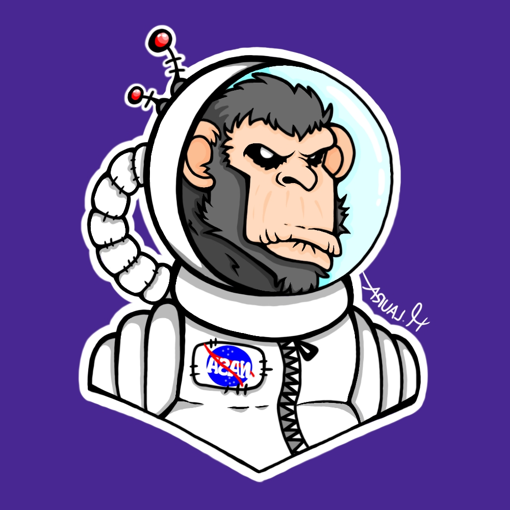

Albert
This is weird, the monster really went for all of them.

Spaghetti Monster
Of course I did, but thanks to you it's all back again.
The great unknown, Pluto gave Albert weird feelings since Albert didn't knew about Pluto being a planet in the solar system.
Pluto is a small dwarf planet in the Kuiper belt, a ring of bodies beyond the orbit of Neptune. It was the first and the largest object to be discovered in the kuiper belt. After Pluto was discovered in 1930, it was said to be the ninth planet from the Sun.